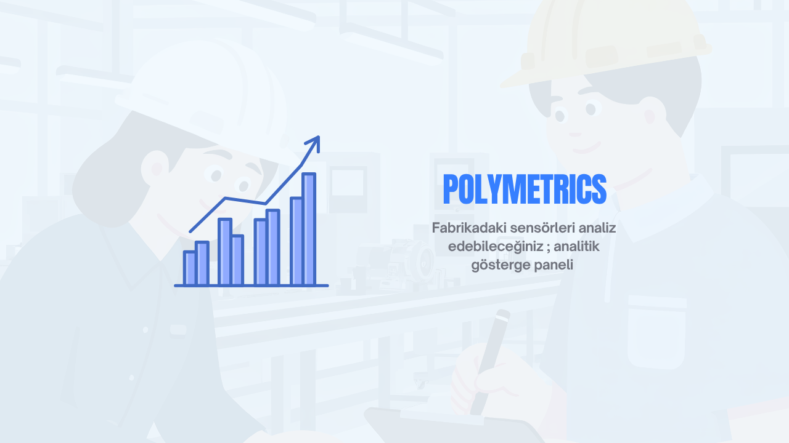
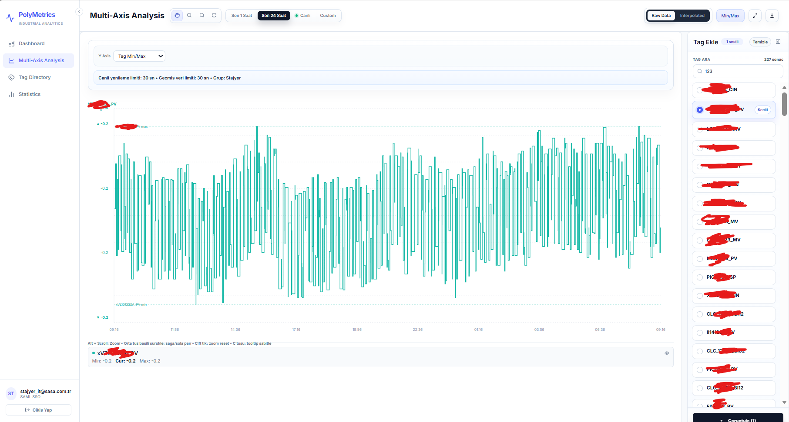
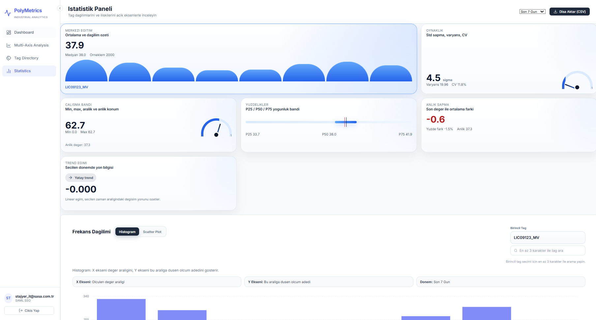

Endüstriyel veriye hızlı bakış zor
Tag, alarm ve istatistik verileri farklı noktalarda dağıldığında ekiplerin kök neden ve trend analizi yapması yavaşlar.
Tag, alarm ve istatistik verileri farklı noktalarda dağıldığında ekiplerin kök neden ve trend analizi yapması yavaşlar.
React, TypeScript ve Express servisleriyle tag detayları, alarm kayıtları ve çok eksenli zaman serisi analizleri aynı deneyimde toplandı.
Operasyon ve mühendislik ekipleri sistem durumunu tek panelden izleyip anormallikleri daha erken fark edebilecek bir yapı kazandı.

PolyMetrics, endüstriyel sistemler için geliştirilmiş, tag, alarm ve istatistik verilerini anlık sağlayan bir analitik gösterge paneli (dashboard) projesidir. React tabanlı frontend ve Express tabanlı çift sunuculu yapısıyla (API ve Config/Auth) hem lokal geliştirme ortamına hem de gerçek PI Web API entegrasyonlarına uçtan uca uygundur.
Bu proje hem lokal geliştirme sürecinde mock datalarla çalışabilir yapıda tasarlanmış olup hem de Nginx gibi ters vekil sunucular aracılığıyla üretime kolaylıkla entegre edilebilir.
Projelere Dön
